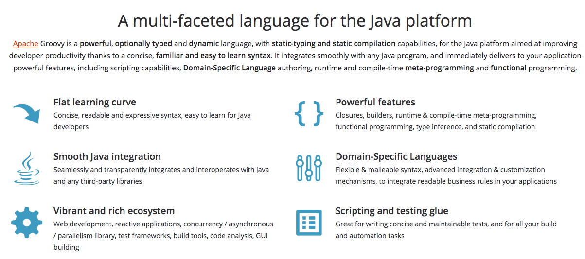

class: center, middle <h1>Groovy for Java developers</h1> <p>By jjballano</p> --- <h2>About me</h2> <div class="about-me"> <div> </div> <div> <ul> <li>Software developer since more than 10 years ago.</li> <li>Started coding in Java.</li> <li>Have worked in several Groovy projects for the last 6 years.</li> <li>Currently working as freelance.</li> </ul> </div> </div> <div class="contact-info"> <h3>Contact info</h3> <div><img class="icon" src="imgs/email.png" alt="Email icon"> <span>jjballano@gmail.com</span></div> <div><img class="icon" src="imgs/twitter.png" alt="Twitter icon"><span>@jjballano</span></div> </div> <div> <h3>Where to find this presentation</h3> <div><a href="https://valenciajug.jjballano.com">https://valenciajug.jjballano.com</a></div> <div>Github: <a href="https://github.com/jjballano/valenciajug_groovy">https://github.com/jjballano/valenciajug_groovy</a></div> </div> --- <h2>What's Groovy?</h2> -- </img> <ul> <li>This task will be focused in Groovy 2.4.x syntaxis</li> <li>At the moment of preparing this slides, 2.5 is in beta-2, 2.6 in alpha-2 and 3.0 in alpha-1</li> </ul> <p><p> <footer><a href="http://groovy-lang.org/">Screenshot from groovy-lang.org</a><footer> --- <h2>Optionally typed and dynamic language?</h2> -- <ul> <li>Sure, you can set a type or use 'def'</li> </ul> ```java Integer typedNumber = 3 typedNumber = "new value" //GroovyCastException def dynamicValue = 10 dynamicValue = "test" assert dynamicValue == "test" ``` -- <ul> <li>But I try to use types as much as I can</li> </ul> -- <ul> <li>You can also use @CompileStatic annotation for checking errors and performance </ul> ```Java @groovy.transform.CompileStatic Integer count(){ return "just checking" //Compilation error } ``` --- <h2>Wait a minute...</h2> -- <ul> <li>Where are the semi-colons?</li> </ul> -- <ul> <li>Yeah! Not required</li> </ul> -- <ul> <li>Have you compared two string with == operator?</li> </ul> -- <ul> <li>Yeah! why not? Who wants to know if two strings are the same object?</li> </ul> -- <ul> <li>Let me show you more good things about Groovy syntaxis</li> </ul> --- <h2>String and GString</h2> -- <ul> <li> GString are interpolated strings </li> </ul> ```Java String name = "ValenciaJUG" println "Hi ${name}" //Hi ValenciaJUG println name.class //java.lang.String println "Hi ${name}".class //org.codehaus.groovy.runtime.GStringImpl ``` -- <ul> <li>You can also compare strings and gstrings with == operator<li> </ul> ```Java String name = "ValenciaJUG" "Hi ${name}" == "Hi ValenciaJUG" "Hi" == "Hi" "Hi ${name}" == "Hi ${name}" "Hi ${name}" === "Hi Valencia" //False! Only for Groovy 2.6 and above ``` --- <h2>Collections</h2> ```java List<Integer> values = [1,2,3] Set<Integer> values = [1,2,3,4,2,4,2] assert values == [1,2,3,4] as Set ``` -- <h2>Maps</h2> ```java String me = "Jesús" Map<String, Integer> ages = ["Lucía": 23, "Carlos": 27, (me): 25] assert ages["Jesús"] == 25 assert ages.Carlos == 27 String name = "Lucía" assert ages."${name}" == 23 ``` --- <h2>Loops</h2> -- <h3>each</h3> ```java List<Integer> values = [3, 4, 10] values.each{ println it * 2 } // will print 6, 8 and 20 values.each{ value -> println value * 2 } // we can use a name for param (1..3).each { println it } // will print 1, 2 and 3 as (1..3) is a range ``` -- <h3>times</h3> ```java 3.times{ println it } // it will print 0, 1 and 2 ``` --- <h2>Loops</h2> <h3>collect</h3> <ul> <li>Returns a list with the result of last sentence of each iteration</li> </ul> ```java List<Integer> values = [3, 4, 10] List<Integer> doubled = values.collect{ it * 2 } assert doubled == [6, 8, 20] ``` -- <h3>collectEntries</h3> <ul> <li>Returns a map with the result of last sentence of each iteration</li> </ul> ```java List<Integer> values = [1,2,3] Map<String, Integer> transformed = values.collectEntries { String key = "value ${it}" [(key): it] } assert transformed == ["value 1":1, "value 2":2, "value 3":3] ``` <ul> <li>Result of last sentence within the block will be added to the list</li> </ul> --- <h2>Loops</h2> <ul> <li>More loops:</li> </ul> -- <ul> <li class="remark-inline-code">1.upto(10) { println it} </li> </ul> -- <ul> <li class="remark-inline-code">10.downto(1) { println it} </li> </ul> -- <ul> <li class="remark-inline-code">["a","b"].eachWithIndex { val, idx -> println "Value ${val} at position ${idx}"} </li> </ul> -- <ul> <li class="remark-inline-code">Integer sum = [4,8].inject(0) { result, i -> result + i }</li> </ul> --- <h2>More methods for collections</h2> -- <ul> <li>find, findAll</li> </ul> ```java List<Integer> values = [1,2,3] assert values.find{ it % 2 == 0 } == 2 assert values.findAll{ it % 2 == 0 } == [2] ``` -- <ul> <li>count, countBy</li> </ul> ```java List<Integer> values = [1,2,3] assert values.count{ it % 2 == 0 } == 1 assert values.countBy{ it % 2 == 0 } == [(false): 2, (true):1] ``` -- <ul> <li>sort</li> </ul> ```java List<Integer> values = [2,7,3,9] assert values.sort(false) == [2,3,7,9] //mutate by default true assert values == [2,7,3,9] List<Map> mapValues = [[a:1, b:2], [a:4, b:4], [a:2, b:8], [a:-1, b:9]] mapValues.sort{ it.a } == [[a:-1, b:9], [a:1, b:2], [a:2, b:8], [a:4, b:4]] ``` --- <h2>Class DefaultGroovyMethods</h2> <ul> <li>It's a Groovy class that defines many methods which appear on normal JDK classes inside the Groovy environment</li> </ul> -- <ul> <li>find, collect, each, with, etc. are defined in DefaultGroovyMethods</li> </ul> -- <ul> <li>Besides those, another one is asBoolean, very useful for if conditional</li> </ul> ```Java if (num){ println "num not null or 0" } else { println "num is null or 0" } ``` ??? This class defines methods that objects will contain out of the box. --- <h2>Date</h2> <ul> <li>Easy way of working with dates and TimeCategory</li> </ul> ```Java Date today = new Date() today - 1 //yesterday today.clearTime() //sets time to 00:00:00 today.format('dd-MM-yyyy') //30-01-2018 Date valenciaJUGDate = Date.parse('dd-MM-yyyy', '30-01-2018') today.downto(new Date() - 10) { println it } use(groovy.time.TimeCategory){ today - 10.minutes today + 3.months } ``` --- <h2>Classes and methods</h2> ```java class MyClass { String attribute = "value" List getAll(){ //the code } void set(String name){ //the code } def getName(){ return "Jesús" } private String getValue(){ "Value in private method" } } MyClass myObject = new MyClass() assert myObject.attribute == "value" assert myObject.getAttribute() == "value" myObject.attribute = "different value" assert myObject.attribute == "different value" myObject.setAttribute("with setter") assert myObject.attribute == "with setter" ``` <ul> <li>Methods can be typed, dynamic or void</li> <li>By default, all attributes are public and have their getter and setter </li> <li>Methods will return last sentence unless it's void.</li> <li>'return' can be used as well</li> </ul> --- <h2>Classes and methods</h2> ```java class MyClass { String getValue(){ "the value" } } ``` <ul> <li>Getters and setters can be used as properties</li> </ul> ```java MyClass myObject = new MyClass() assert myObject.value == "the value" ``` --- <h2>Classes and methods</h2> ```java class MyClass { private String privateAttribute = "private" private String getValue(){ "Value in private method" } } MyClass myObject = new MyClass() assert myObject.privateAttribute == "private" new myObject.getPrivateAttribute() //groovy.lang.MissingMethodException: No signature of method: MyClass.getPrivateAttribute() is applicable for argument types: () values: [] assert myObject.value == "Value in private method" ``` <ul> <li>Private attributes don't have getter and setter</li> <li>Private attributes and methods are not really private... Quite weird, I know</li> </ul> --- <h2>Classes and methods</h2> ```java class MyClass { String getValue(){ "Value in method" } } MyClass myObject = new MyClass() String attribute = "value" assert myObject."${attribute}" == "Value in method" ``` <ul> <li>Methods and attributes can be accessed with string values</li> </ul> --- <h2>Classes and methods</h2> ```java class MyClass { String name } MyClass myObject = new MyClass([name: "Jesús"]) //brackets not needed -> new MyClass(name: "Jesús") assert myObject.name == "Jesús" ``` <ul> <li>Classes always have a constructor that receives a Map and sets all properties</li> </ul> --- <h2>Classes and methods</h2> <h3>with</h3> ```java class MyClass { String name = "Jesús" } MyClass myObject = new MyClass() myObject.with{ assert name == "Jesús" } ``` --- <h2>Closures</h2> -- <ul> <li>As you've seen in loops before, Groovy has closures</li> </ul> -- <ul> <li>Their syntaxis is </li> </ul> ```java { [closureParameters -> ] statements } ``` -- <ul> <li>As methods, always returns the result of last sentence</li> </ul> -- <ul> <li>They can be assigned to a variable</li> </ul> ```java Closure sayHi = { "Hi, ${it}" } assert sayHi('ValenciaJUG') == "Hi, ValenciaJUG" ``` -- <ul> <li>And used in methods</li> </ul> ```java String tellMeSomething(Closure closure){ closure.call("ValenciaJUG") } assert tellMeSomething{ name -> "Hi, ${name}" } == "Hi, ValenciaJUG" ``` --- <h2>Traits</h2> <ul> <li>Similar to mixins in other languages</li> <li>Composition instead of inheritance<li> </ul> ```java trait MyTrait { String name = "Jesús" String sayHello() { "Hello from the trait" } } class MyClass implements MyTrait{ } MyClass myObject = new MyClass() assert myObject.sayHello() == "Hello from the trait" assert myObject.name == "Jesús" ``` --- <h2>Null safe operator ( ? )</h2> <ul> <li>You don't need to constantly check if an object is null</li> <li>Avoid NullPointerException</li> </ul> ```java String name = null assert name?.size() == null ``` --- <h2>Elvis operator ( ?: ) </h2> <ul> <li>Less verbose ternary operator</li> <li>Return the conditional expression if it evaluates to true</li> </ul> ```java Integer value = 0 println value ?: 10 //print 10 value = 20 println value ?: 10 //print 20 ``` -- <ul> <li>Why Elvis?</li> </ul> -- --- <h2>Spread operator ( * )</h2> <ul> <li>Gets all values for a property in a list of objects</li> </ul> ```java class User { String name } List<User> users = [new User(name: "Jesús"), new User(name: "Miguel Ángel")] assert users*.name == ["Jesús", "Miguel Ángel"] ``` -- <ul> <li>* is optional, but I rather use it to make the code clearer</li> </ul> ```java assert users.name == ["Jesús", "Miguel Ángel"] ``` --- <h2>Try it yourself</h2> <ul> <li>Groovy installation comes with a tool called Groovy Console where you can test any groovy code</li> </ul> --- <h2>Ecosystem</h2> <ul> <li>Groovy has a good ecosystem of products around it, here some of the most important ones you can use with groovy</li> </ul> -- <ul> <li><b>SDKMAN!</b>: Tool for managing parallel versions of multiple Software Development Kits</li> </ul> -- <ul> <li><b>Grails</b>: Web application framework for the JVM built on top of Spring Boot</li> </ul> -- <ul> <li><b>Spock</b>: Testing and specification framework</li> </ul> -- <ul> <li><b>Geb</b>: Browser functional testing framework</li> </ul> -- <ul> <li>Other software used in Java enviroment such as <b>Gradle</b>, <b>Griffon</b>, <b>Ratpack</b>, etc, are also used in Groovy projects</li> </ul> --- <h2>Questions?</h2> <div class="questions"> <img src="imgs/questionmark.png"> </div> --- <div> <img src="imgs/thanks.jpg" class="full-size"> </div> <div class="contact-info"> <div><img class="icon" src="imgs/email.png" alt="Email icon"> <span>jjballano@gmail.com</span></div> <div><img class="icon" src="imgs/twitter.png" alt="Twitter icon"><span>@jjballano</span></div> </div>